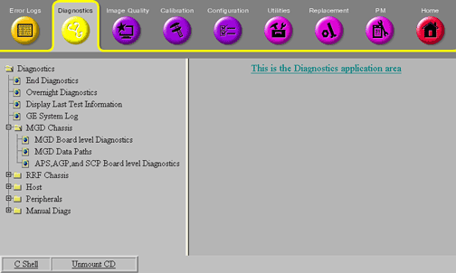

Proprietary to General Electric Company
Direction 5670006, Rev# 1
Discovery MR750w GEM Service Methods
Module Version 3.0, Version Date 8/12/11
Proprietary to General Electric Company |
Board-level Diagnostics (BLD) should typically be the first tests run when troubleshooting errors that potentially reside in MGD chassis. If BLDs are run and pass, this ensures that communication is at least theoretically possible to all the boards. Most other tests should not be run until BLDs are successfully performed. They can be accessed from the Common Service Browser by clicking the [Diagnostics] tab, selecting MGD Chassis from the column on the left, and then selecting the specific test (see Illustration 1).
Illustration 1: MGD Diagnostics

The following diagnostics are available to check the MGD chassis. Further information is also available from the hyperlinked test names on the MR system (see Section 5 of Diagnostic Overview).
These diagnostics allow individual testing of the following MGD Chassis boards:
You can access full details about this test including theory, instructions, and troubleshooting directly from the test's Service Browser interface by clicking hyperlinked text or by clicking the board name in the list above to go directly to the online help.
All these test are pass/fail.
These diagnostics allow the testing of the communication paths between various boards in the MGD Chassis. Data paths diagnostics are tests which transfer data from one FRU to another for the purpose of validating the hardware. Where possible, this is accomplished by utilizing the application code in a similar manner, as it would be used for patient scanning. This serves two purposes. The first purpose has two advantages: it can detect the same errors as the application code does, and the canned data can be validated once it reaches its destination. The second purpose is to validate the software as well as the hardware. The intensity at which the diagnostic works can speed up the detection of timing related problems.
The following data paths can be tested.
You can access full details about this test including theory, instructions, and troubleshooting directly from the test's Service Browser interface by clicking hyperlinked text or by clicking the board name in the list above to go directly to the online help.
All these test are pass/fail.
This diagnostic allows individual testing of the following Motorola PowerPC boards:
You can access full details about this test including theory, instructions, and troubleshooting directly from the test's Service Browser interface by clicking hyperlinked text or by clicking the board name in the list above to go directly to the online help.
All these test are pass/fail.